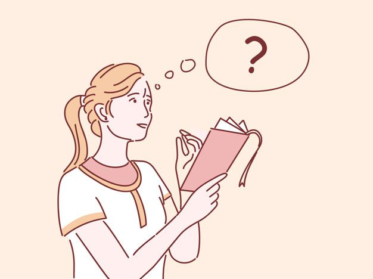

Cecília decidiu que iria fazer uma viagem para comemorar seu aniversario.
Passagem e hotel no Brasil confirmados. O próximo passo é definir o roteiro.
Cecília precisa confirmar se seus documentos estão em dia para a viagem internacional.
Com o roteiro pronto, Cecília foi até o aeroporto para o check-in.

Ela decidiu que adiar a viagem e ficar em casa seria melhor. Fim.
Documentos em dia, Cecília decide convidar sua irmã mais nova de 10 anos.
Cecília precisa atualizar o passaporte e sua irmã, sem pensar demais, aceitou ir junto.
Cecília decide levar sua irmã mais nova até o lugar para tentar tirar o passaporte dela.
Depois de tudo certo, decidem ir finalmente para Paris.

O local estava fechado e a viagem internacional não poderá ocorrer sem o passaporte da irmã. Cecília e a irmã voltam para casa chateadas. Fim.
Após embarcarem, as duas dormiram e acordaram já em Paris!

Elas aproveitaram, comeram em vários restaurantes chiques e apreciaram o lugar maravilhoso.
Depois de muitos dias, voltaram para o Brasil felizes e contentes.
Mostraram todas fotos e vídeos para seus pais, e durmiram tranquilas sabendo que realizou um dos seus maiores sonhos. Fim.